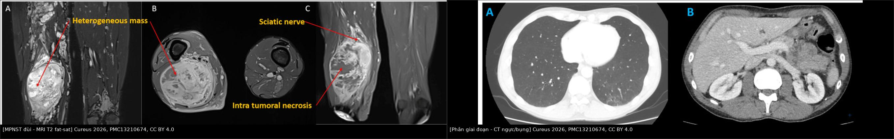
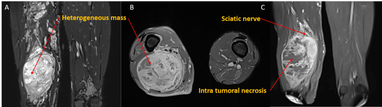
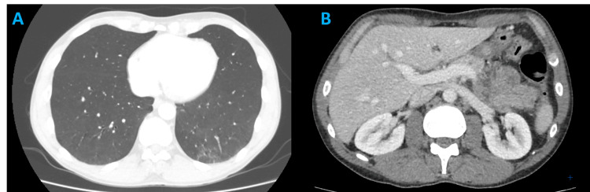
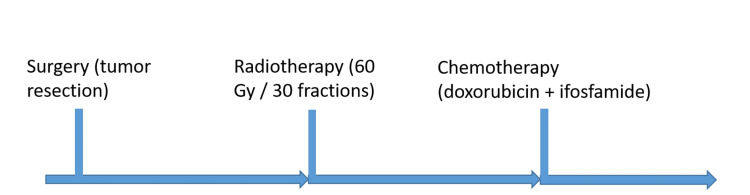

379 — MPNST: điều trị đa mô thức & theo dõi di căn phổi / Malignant peripheral nerve sheath tumor: multimodality treatment & pulmonary surveillance
Tags: pattern:u-phan-mem pattern:u-thanh-kinh-ngoai-vi vung:mo-mem vung:phoi score:SUVmax score:ADC score:TNM protocol:MRI-mo-mem protocol:PET-CT protocol:CT-nguc incidentaloma:di-can-phoi
Mức chắc chắn (certainty): tổng hợp y văn (literature synthesis) — tổng hợp guideline thực hành MPNST 2026, cohort quốc gia Đan Mạch, đồng thuận ESSR 2024 về theo dõi sarcoma và ca nguyên văn CC BY 4.0; phần ca quiz là ca nguyên văn của bài gốc.
1. Tổng quan bệnh học – cơ chế hình ảnh
1.1 MPNST là gì và ai mắc?
- MPNST (malignant peripheral nerve sheath tumor — u bao dây thần kinh ngoại vi ác tính) là sarcoma mô mềm hiếm, hung hãn, xuất phát từ dây thần kinh ngoại vi hoặc bao dây, chiếm 5–10% toàn bộ sarcoma mô mềm. Đặc trưng: phát triển nhanh, tái phát tại chỗ cao, di căn sớm (chủ yếu phổi).
- Gần 50% MPNST gắn với NF1 (neurofibromatosis type 1 — bệnh u sợi thần kinh type 1); nguy cơ MPNST suốt đời ở NF1 8–15%. MPNST là nguyên nhân tử vong hàng đầu ở NF1.
- Tuổi mắc: thể lẻ tẻ (sporadic) quanh 50 tuổi; thể NF1 sớm hơn, 25–35 tuổi; thể do xạ trị (radiation-induced) xuất hiện nhiều thập kỷ sau xạ, tiên lượng xấu nhất.
- Tiên lượng định lượng: OS 5 năm 34–50% nói chung; sau mổ 47%; ở bệnh khu trú, cohort Đan Mạch 2000–2020: nfMPNST 44% vs sMPNST 63% (p = 0,03). Cùng cohort: u > 5 cm gặp 88% ở nfMPNST vs 50% ở sMPNST; R0 chỉ 35% vs 66%; tái phát 69% vs 49%; thời gian tái phát trung vị 2,2 vs 3,4 năm.
1.2 Con đường mô bệnh học: PN → ANNUBP → MPNST
- Plexiform neurofibroma (PN — u dây thần kinh dạng đám rối) là tổn thương lành, nhưng ở NF1 có thể tiến triển từng bước: mất cả hai alen NF1 → ANNUBP (atypical neurofibromatous neoplasm of uncertain biologic potential — u thần kinh không điển hình, tiềm năng sinh học chưa rõ) → MPNST.
- Đột biến then chốt: mất CDKN2A/B (thường sớm nhất), sau đó SUZ12/EED (mất PRC2) → mất H3K27me3 trên hóa mô miễn dịch; thêm TP53.
- Tiêu chuẩn mô bệnh (WHO 2021/2022):
- ANNUBP: ≥ 2 trong 4 đặc điểm — dị dạng tế bào, mất cấu trúc u thần kinh, tăng mật độ tế bào, phân bào > 1/50 HPF và < 3/10 HPF.
- MPNST độ cao: ≥ 10 phân bào/10 HPF, hoặc 3–9 phân bào/10 HPF kèm hoại tử địa lý (geographic necrosis).
- H3K27me3 mất hoàn toàn là dấu thay thế đặc hiệu cho bất hoạt PRC2 ở u độ cao; S100/SOX10 giảm hoặc mất (khác u lành còn bộc lộ mạnh).
1.3 TẠI SAO hình ảnh phản ánh đúng mô bệnh
- MRI là chuẩn vàng vì tương phản mô mềm cao: MPNST điển hình là khối không đồng nhất, có ổ hoại tử (T2 rất sáng, không ngấm thuốc) và ổ xuất huyết (T1 sáng do methemoglobin); phần u sống ngấm thuốc không đều, kiểu viền/nốt.
- DWI/ADC: u giàu tế bào → khoảng ngoại bào chật → khuếch tán hạn chế → ADC thấp. Đây là lý do ADC giúp phân biệt PN lành (ADC cao) với MPNST (ADC thấp), dù không đủ để chẩn đoán một mình.
- FDG-PET: tế bào ác tính tăng chuyển hóa glucose → SUVmax cao; nhưng viêm, ANNUBP và một số u lành cũng tăng FDG → PET không thay thế mô bệnh.
- CT: không phải chuẩn cho u nguyên phát, nhưng cần để phân giai đoạn phổi và đánh giá xâm lấn xương; di căn phổi là đích di căn hàng đầu (khoảng 80% di căn của sarcoma mô mềm nói chung).
2. Mẫu hình + chẩn đoán phân biệt theo vị trí (gamut)
- Mẫu hình gốc: người lớn (hoặc NF1 trẻ) với khối mô mềm lớn, đau, lớn nhanh, nằm dọc trục một dây thần kinh lớn hoặc sâu trong trục cơ thể, kèm thiếu hụt thần kinh mới.
- Gamut theo vị trí:
- Chi (đùi, vai, cánh tay, khoeo): hay gặp nhất; dọc dây thần kinh hông to, dây thần kinh quay, dây thần kinh trụ; khối lớn, dễ hoại tử.
- Trục thân / cạnh sống / sau phúc mạc: khó mổ R0, tiên lượng xấu; dễ nhầm sarcoma sau phúc mạc khác.
- Đầu – cổ: liệt dây sọ, hội chứng lỗ chẩm; khối lan theo khoang cổ sâu.
- Tạng (dạ dày, ruột, bàng quang, tử cung): hiếm; ngưỡng nghi MPNST cao hơn, phải loại trừ sarcoma biểu mô/tiêu hóa.
- Bắt chước (mimics) bắt buộc loại trừ: synovial sarcoma thể đơn pha, melanoma dạng tế bào thoi/thể mô tả, leiomyosarcoma, fibrosarcoma, ANNUBP, PN lành.
- Mnemonic lâm sàng “PAIN-GROW”: Pain mới/tăng, Axis dọc dây thần kinh, Increasing size nhanh, Neurologic deficit mới, Growth trên phim cũ, Radiation trước đó, Old NF1 với PN, Worrisome imaging (không đồng nhất/hoại tử).
3. Bảng so sánh phân biệt (ma trận đối chiếu)
| Thực thể (entity) | Hình ảnh điển hình (MRI/CT) | Chốt vào (rule-in) | Chốt loại (rule-out) | Gợi ý xác nhận |
|---|---|---|---|---|
| PN lành (plexiform neurofibroma) | Khối dọc dây thần kinh, nhiều dấu bia (target sign) trên T2, tín hiệu đồng nhất, split-fat sign, ngấm thuốc lan tỏa | Nhiều target sign + đồng nhất + NF1 lâu năm + không nốt mới | Nốt mới trong u cũ, không đồng nhất, phù quanh u, ADC thấp → không còn đơn thuần lành | MRI T1/T2 fat-sat + DWI; so phim cũ |
| ANNUBP | Trong PN cũ xuất hiện nốt mới, mất cấu trúc đều; ADC giảm nhẹ; chưa hoại tử lan rộng | Nốt mới trong u cũ + mất cấu trúc (≥ 2/4 tiêu chí mô bệnh) | U đồng nhất, ADC cao, không nốt mới → nghĩ PN lành | Sinh thiết đúng vùng nốt + mô bệnh ± CDKN2A/B |
| MPNST (độ cao) | Khối lớn, T1 không đồng nhất, T2 hỗn hợp, hoại tử/xuất huyết, ngấm viền/nốt, phù quanh u, mất target sign; ADC thấp, SUVmax cao | Khối > 5 cm + đau/lớn nhanh + không đồng nhất/hoại tử + ADC thấp + SUVmax cao | Target sign rõ + ADC cao + SUVmax thấp không loại trừ tuyệt đối | Mô bệnh (phân bào/hoại tử/H3K27me3); PET/CT |
| Schwannoma | Bờ rõ, có thể thoái hóa nang/đốm xuất huyết, gắn một dây thần kinh, không đan xen toàn bộ dây | Bờ rõ + lệch dây thần kinh + không đan xen | Đan xen đám rối + NF1 + nhiều tổn thương → nghĩ PN/MPNST | MRI; bệnh cảnh NF2/schwannomatosis |
| Synovial sarcoma thể đơn pha | Khối mô mềm sâu, vôi hóa 20–30%, không rõ gốc dây thần kinh; có thể giống hệt MPNST | Vôi hóa trong khối + không liên tục với dây thần kinh | Dọc dây thần kinh + NF1 → nghĩ MPNST hơn | Mô bệnh + SYT-SSX (SS18-SSX) |

Trái: MPNST đùi — MRI T2 fat-sat, khối không đồng nhất lan dọc trục, có ổ hoại tử. Phải: CT ngực/bụng ở thì tĩnh mạch cửa — dùng để tìm di căn phổi và đánh giá tạng. Nguồn: Cureus 2026 (PMC13210674), CC BY 4.0. Ảnh ghép letterbox, không crop/kéo giãn.4. Protocol chụp + phân giai đoạn + phác đồ điều trị
4.1 Protocol chẩn đoán và phân giai đoạn
- MRI toàn bộ khoang chứa u (không chỉ vùng đau): T1W, T2W fat-sat/STIR, DWI/ADC, T1W sau tiêm gadolinium; đo đường kính lớn nhất (mm), độ sâu trên/dưới mạc cơ (superficial/deep), khoảng cách tới bó mạch–thần kinh và xương.
- CT ngực có cản quang ở thì nền (baseline) để tìm di căn phổi; CT/MRI bụng nếu u trục thân hoặc nghi di căn tạng.
- FDG-PET/CT khi: NF1 có PN lớn, nghi chuyển dạng, hoặc phân biệt u sống/hoại tử sau điều trị. PET dương không chốt ác — vẫn cần mô bệnh.
- Sinh thiết lõi (core needle biopsy) trước mổ: lấy vùng ngấm thuốc/không hoại tử, có thể nhiều mảnh vì u không đồng nhất; đường sinh thiết phải nằm trong trường mổ để cắt trọn cùng khối u.
- Phân giai đoạn AJCC 8th (sarcoma mô mềm chi/thân): T1 ≤ 5 cm; T2 > 5–10 cm; T3 > 10–15 cm; T4 > 15 cm; N1 hạch vùng; M1 di căn; độ mô học G1–G3. MPNST mặc định xử trí như sarcoma độ cao.
4.2 Điều trị đa mô thức — các con số quyết định
- Phẫu thuật: là phương thức duy nhất có khả năng chữa khỏi; mục tiêu R0 (bờ âm). Ưu tiên bảo tồn chi nếu đạt R0; cắt cụt/cắt khoang khi không thể R0, liệt nặng hoặc đau không kiểm soát. R0 là yếu tố tiên lượng mạnh nhất; ở NF1 phải lấy bờ rộng hơn vì u không đồng nhất.
- Xạ trị (RT): chỉ định cho u độ cao, bờ sát/dương, u lớn; liều > 50 Gy, bắt đầu 4–6 tuần sau mổ khi vết mổ ổn (ca minh họa dùng 60 Gy/30 phân liều). MONACO: RT giảm tái phát tại chỗ ở nhóm lẻ tẻ (47%) nhưng không cải thiện OS, và không rõ lợi ích ở NF1; brachytherapy/IOERT đạt kiểm soát tại chỗ 5 năm 88%. Ở NF1, cân nhắc vì nguy cơ u nguyên phát thứ hai do xạ.
- Hóa trị: không có chỉ định hóa trị bổ trợ thường quy cho MPNST khu trú; cân nhắc từng ca (u lớn, độ cao, trẻ, bờ sát). Bệnh không mổ được/di căn: anthracycline là nền tảng — đáp ứng 21%, PFS 17 tuần, OS 48 tuần; doxorubicin–ifosfamide vượt doxorubicin đơn trị về đáp ứng/PFS; sau tiến triển gemcitabine + docetaxel đáp ứng 10–15%. NF1 liên quan kháng hóa trị hơn.
- Điều trị đích/miễn dịch: chủ yếu trong thử nghiệm lâm sàng — BRAF V600E → vemurafenib; mất PRC2 (SUZ12/EED) → tazemetostat (EZH2 inhibitor); ức chế MEK đang thử; ức chế điểm kiểm soát chỉ có hoạt tính lẻ tẻ.
- Theo dõi sau điều trị (ESSR 2024):
- Mốc nền không sớm hơn 3 tháng sau mổ (tránh nhầm mô hạt/seroma với tái phát).
- Độ cao: năm 1–3 mỗi 3–4 tháng; năm 4–5 mỗi 6 tháng; năm 6–10 mỗi năm.
- Độ thấp: năm 1–3 mỗi 6 tháng; năm 4–10 mỗi năm.
- MRI vùng mổ + CT ngực là cặp theo dõi chuẩn; tái phát → khởi động lại phác đồ; theo dõi ít nhất 10 năm.
flowchart TD
A[Khối mô mềm đau, lớn nhanh, dọc dây thần kinh] --> B[MRI có cản quang + DWI/ADC]
B --> C{Nghi MPNST?}
C -->|Không| D[Theo dõi / MRI định kỳ, so phim cũ]
C -->|Có| E[Sinh thiết lõi đúng vùng ngấm thuốc]
E --> F[Mô bệnh + H3K27me3 + CDKN2A/B]
F --> G[CT ngực phân giai đoạn + PET/CT nếu cần]
G --> H{Có di căn xa?}
H -->|Không| I[Mổ R0 ± xạ trị bổ trợ]
H -->|Có| J[Hóa trị anthracycline ± thử nghiệm lâm sàng]
I --> K[Theo dõi: MRI + CT ngực theo ESSR]
J --> K
K --> L{Tái phát?}
L -->|Có| M[MRI xác nhận + sinh thiết nếu mổ được]
M --> I
5. Biến thể bình thường và cạm bẫy
- “Đau” ở PN không phải lúc nào cũng là MPNST: PN lớn có thể đau do chèn ép/thoái hóa, nhưng đau mới, tăng nhanh, kèm thiếu hụt thần kinh là cờ đỏ.
- Bẫy lấy mẫu trong NF1: u có vùng lành và vùng ác xen kẽ; sinh thiết một chỗ có thể âm tính giả. Phải lấy nhiều mảnh, đúng nốt ngấm thuốc/FDG, và cắt trọn u khi mổ.
- PET dương tính giả: viêm, sau sinh thiết, ANNUBP, một số u lành; SUVmax không có ngưỡng tuyệt đối thay thế mô bệnh.
- Sau mổ: mô hạt, seroma, xơ xạ có thể ngấm thuốc và giả tái phát; MRI nền ≥ 3 tháng và so sánh nhiều thời điểm.
- Nốt phổi nhỏ: u hạt lành vs di căn; không sinh thiết ngay nốt 3–4 mm — chụp lại theo lịch, đánh giá tăng kích thước/thời gian nhân đôi.
- Xạ trị ở NF1: nguy cơ u nguyên phát thứ hai; không dùng RT tràn lan khi không có chỉ định.
- Cạm bẫy mặt cắt: khối sau phúc mạc/cạnh sống dễ bị đọc là u cơ trơn/thận/thượng thận; luôn truy vết dọc dây thần kinh và hỏi NF1.
6. Tự lượng giá — Blind Quiz
Ca 1 — Nam 40 tuổi, NF1, khối đùi sau lớn nhanh, đau tăng 3 tháng.

- Câu hỏi: Mô tả tín hiệu và cấu trúc khối. Vì sao khối này không còn giống PN lành? 3 chẩn đoán phân biệt?
Bấm để hiện đáp án (findings + chẩn đoán)
- Dấu hiệu: khối lớn lan dọc trục cơ đùi, T2 fat-sat không đồng nhất với vùng tăng tín hiệu mạnh (hoại tử/nhầy) xen vùng trung gian; mất cấu trúc “bia” đều của PN; bờ không đều, lan dọc dây thần kinh hông to.
- Chẩn đoán: MPNST phát triển từ PN/NF1 — vì u mất cấu trúc đều, có hoại tử và lớn nhanh; cần mô bệnh xác nhận (phân bào/hoại tử/H3K27me3).
- Phân biệt: ANNUBP (nốt mới, chưa hoại tử lan rộng), synovial sarcoma thể đơn pha, leiomyosarcoma.
- Nguồn ảnh: Cureus 2026, Fig. 2, PMCID PMC13210674, CC BY 4.0.
Ca 2 — Cùng bệnh nhân, CT ngực ở thì nền trước mổ.

- Câu hỏi: CT ngực nhằm mục đích gì? Nếu thấy một nốt đặc 4 mm ở thùy dưới phải thì xử trí thế nào?
Bấm để hiện đáp án (findings + chẩn đoán)
- Mục đích: phân giai đoạn phổi — phổi là đích di căn hàng đầu của sarcoma mô mềm; CT ngực có độ nhạy cao hơn X-quang. Trong ca này không thấy nốt di căn trên CT ngực/bụng.
- Nốt 4 mm: không sinh thiết ngay; đây là nốt không xác định (indeterminate) — chụp CT lặp lại theo lịch sarcoma (thường 3 tháng), đánh giá tăng kích thước. Nốt ≥ 5–6 mm hoặc tăng dần cần cân nhắc PET/CT/sinh thiết.
- Nguồn ảnh: Cureus 2026, Fig. 3, PMCID PMC13210674, CC BY 4.0.
Ca 3 — Phác đồ đã thực hiện sau mổ.

- Câu hỏi: Sau cắt u, thời điểm và liều xạ trị? Có chỉ định hóa trị bổ trợ thường quy không?
Bấm để hiện đáp án (findings + chẩn đoán)
- Xạ trị: bắt đầu 4–6 tuần sau mổ, tổng liều 60 Gy/30 phân liều trong ca này (nguyên tắc > 50 Gy cho u độ cao/bờ sát).
- Hóa trị bổ trợ: không thường quy; ca này nhận doxorubicin + ifosfamide theo quyết định đa chuyên khoa (u lớn, độ cao). Với bệnh di căn, anthracycline là nền tảng: đáp ứng 21%, PFS 17 tuần, OS 48 tuần.
- Nguồn ảnh: Cureus 2026, Fig. 7, PMCID PMC13210674, CC BY 4.0.
Bài liên quan chéo
- 377 – U dây thần kinh dạng đám rối & chuyển dạng MPNST ở NF1
- 378 – Điều trị PN ở NF1 bằng selumetinib
- 376 – U phần mềm không mỡ
- 375 – U phần mềm nhóm mỡ
- 300 – Tổng quan hệ Cơ – Xương – Khớp
Không dùng để chẩn đoán độc lập khi chưa có người hướng dẫn.